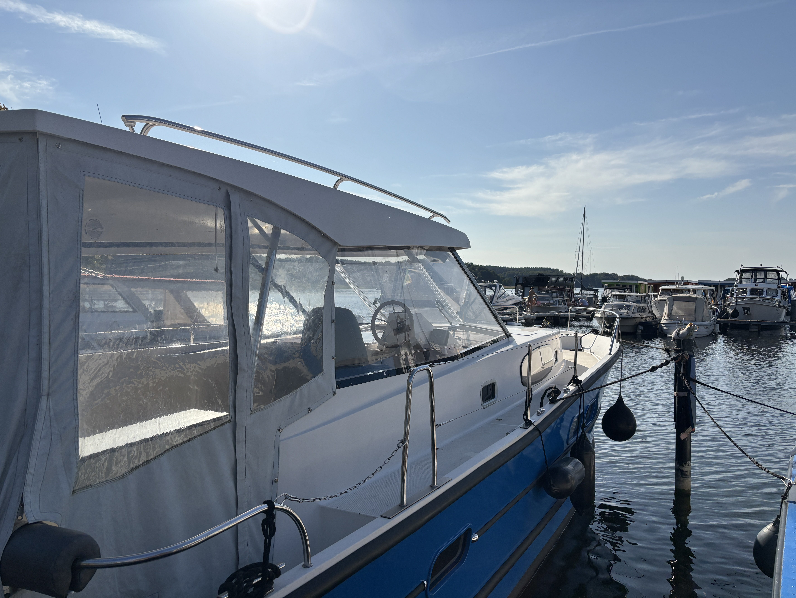

FÜR IHRE BOOTE
Liegeplätze
Sichere und gepflegte Liegeplätze direkt am malerischen Gudelacksee.
80 Liegeplätze an barrierefreien Stegen mit seitlichem Ausstieg, dazu Freigelände und Hallenlager. Strom und Wasser liegen direkt am Steg, Sanitäranlagen, Hafenbistro und Ortszentrum sind wenige Schritte entfernt.
Dauerlieger
ab 90 € / Monat
12 Monate inkl. Winterfreilager
Saisonlieger
auf Anfrage
Bitte sprechen Sie uns an
Gastlieger
2,50 € / m · Nacht
April bis Oktober, bis 12.00 Uhr
- Dauerliegeplatz nach Bootslänge: 90 € bis 5 m, 210 € bis 10 m, 300 € bis 12 m – über 13 m auf Anfrage
- Winterlager in der Halle statt im Freien: Aufschlag 30 %, Sommer-Trailerstellplatz inklusive
- Strom 0,80 € / kWh, Wasser 2 € / 100 l, Fäkalienentsorgung 10 € pro Tank, WLAN kostenfrei
- Sanitäranlagen, Waschmaschine und Trockner, Müllentsorgung, nachts bewachte Anlage
Bootslänge jeweils inklusive aller Anbauteile. Alle Preise enthalten die gesetzliche Mehrwertsteuer; Kranen und Slippen werden gesondert berechnet.
Liegeplatz anfragen